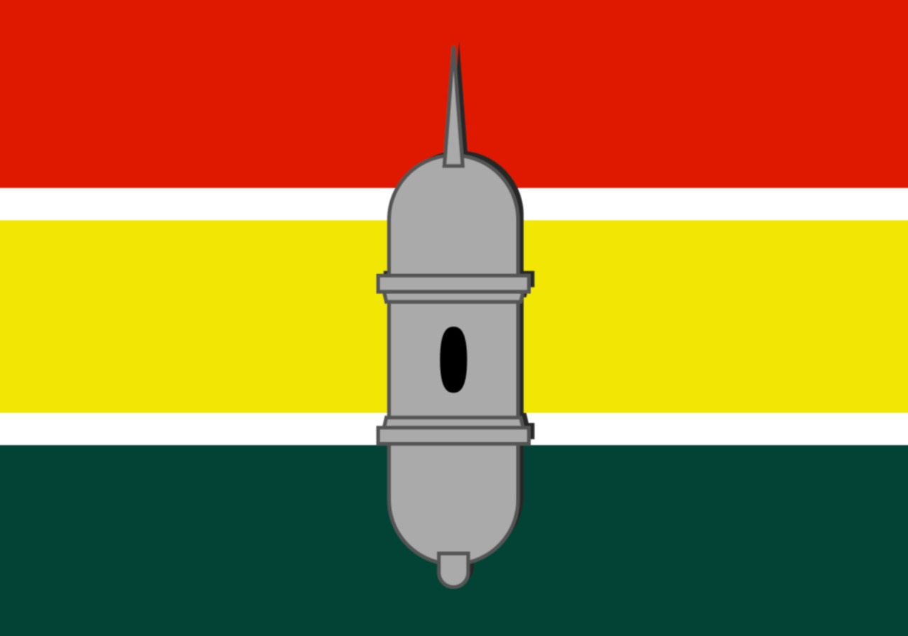
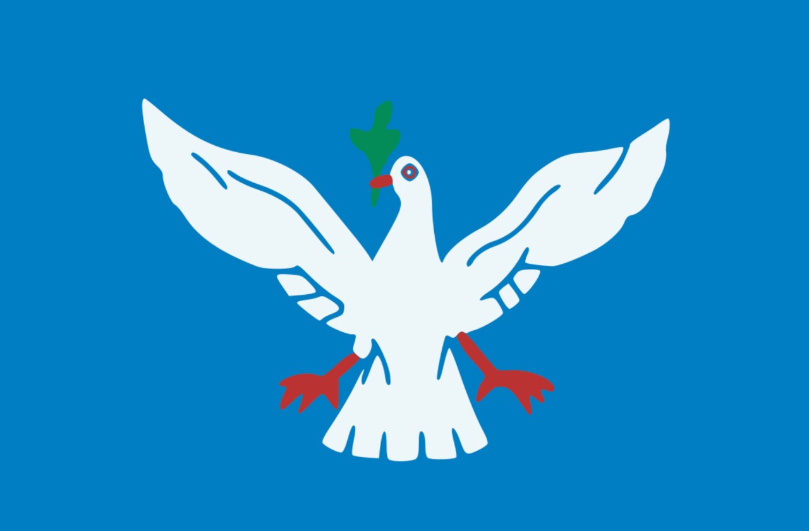

Estados e algumas capitais
Maceió

Maceió é a capital do estado de Alagoas.
Área territorial: 509,6km² População: 1.012.387 de habitantes
Curiosidade: Muito procurada pelos turistas nos meses de verão centro financeiro, social e cultural de Alagoas.
Amapá

Macapá é a capital do estado do Amapá
Área territorial: 6.407km² População: 493.634 habitantes
Curiosidade: a única que não faz ligação com outras capitais por meio de rodovias.
Salvador

Salvador capital do estado da Bahia
Área territorial: 693,8 km² População: 2,7 milhões de habitantes
Curiosidade: foi a primeira do BRASIL
Manaus

Manaus é a capital do estado do Amazonas
Área territorial:11.401km² População: 2 milhões de habitantes.
Curiosidade: situada no centro da floresta amazônica
Rio Branco

Rio Branco é a capital do estado do Acre (AC).
Área territorial: 8.835km²
População: 350mil habitantes.
Curiosidade:
de “Capital da Natureza”, em razão dos seus atributos naturais.
São Paulo

São Paulo capital do estado de São Paulo
Área territorial: 1.521 km²
População: 12 milhões de habitantes
Curiosidade: maior cidade do país é considerada uma metrópole mundial brasileira.